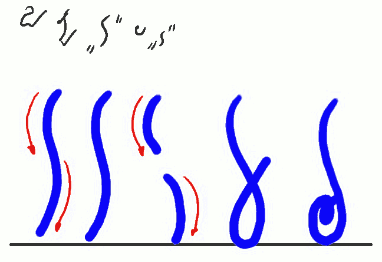
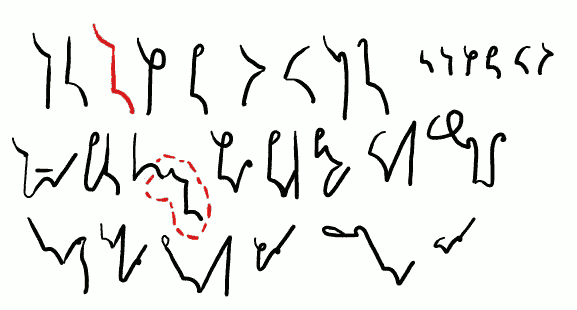
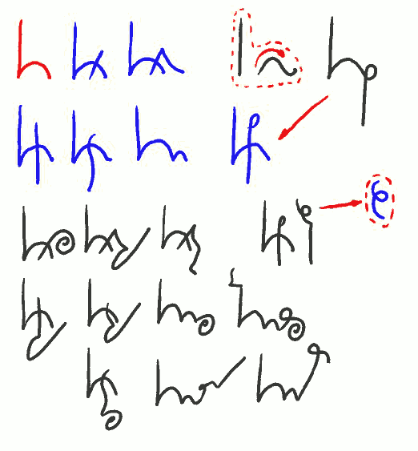
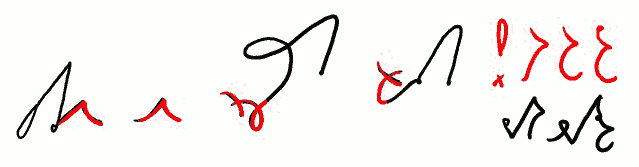

International
InternationalKurs SteMi - lekcja 05
2013-03-20 | autor: flamenco108Witam. W lekcji piątej. Dziś zajmiemy się szybko literą i głoską T.

Dziwna litera “T” lub “D”
T T T TO TI(TJ)
(D D D DO DI(DJ))
Zwracam uwagę na dwa ostatni znaki: TO i TI. Zastosowane rozwiązania, szczególnie TO, nie powtarzają się w systemie. Znak TI zbudowany jest zgodnie z regułą, którą przedstawię w następnych lekcjach.
Litera T jest specyficzna w zbiorze znaków SteMi. W całości pisze się jak smukły, pionowy wężyk. Ale Niemiec (przepraszam, pies, oczywiście, pies) pogrzebany jest w łączeniach T z innymi spółgłoskami. Do tego celu dzielimy ją na pół i okazuje się, że w rzeczywistości składa się ona z dwóch, pochylonych nieco w lewo, łuczków.
Tutaj zrobię przerwę i powiem coś na temat miar pisma. Pojęcia linii pisma, miary pisma, powstały zapewne gdzieś w okolicach Średniowiecza, kiedy kończyły karierę swoją skryptoria, czyli miejsca, gdzie książki przepisywano ręcznie, a zaczynały pojawiać się drukarnie (co osobnego wyjaśnienia chyba nie potrzebuje). Zatem po raz kolejny uzupełnimy tutaj swoją wiedzę, na początek przy pomocy wikipedii, która powie nam, co to jest linia bazowa pisma.

Oprócz linii bazowej, zwykle w piśmie występują także linia środkowa, górna i dolna. Odległość pomiędzy liniami bazową i środkową stanowi miarę pisma (x-height). Stąd w wielu podręcznikach stenografii mówi się o znakach dwumiarowych (w przypadku SteMi to głoski bezdźwięczne za wyjątkiem Ć), jednomiarowych (w przypadku SteMi to liczne głoski dźwięczne) oraz np. półmiarowych (w przypadku SteMi to niektóre głoski dźwięczne). Może się okazać, że strzeli mi do głowy, żeby użyć tego słownictwa przy dalszych objaśnieniach. Z punktu widzenia powyższego, litera T jest dwumiarowa, a listera D - jednomiarowa.
Takoż z punktu widzenia powyższego pierwsze objaśnienie dotyczące linii pisma: system SteMi należy uznać za bezliniowy. Czyli taki, który nie trzyma się linii pisma kurczowo, a zarazem położenie znaków względem linii nie wpływa na ich odczyt. Oczywiście, jest to kolejna sprawa, którą pozostawiam do uznania użytkowników systemu. Jeżeli kiedyś uda mi się zaprojektować czcionkę do SteMi, siłą rzeczy będzie musiała być dowiązana do linii bazowej. Ale w piśmie odręcznym nie ma takiego obowiązku.

TK KT TKTLekcja TP PT TW(TF) WT(FT) HT TH GD DG DB BD WD DW
tkanina pakt kon(takt) deptał ptak bitwa wtyk westchnął
kształt gdakała prztyk dbała przechrzta wdała
Powyżej widać grupy spółgłoskowe, czyli (uwaga, nowe słówko!) FIKSY, bo tak nazwałem wszelkie złożenia znakowe, dla których nie stosujemy zamian. Tak to należy pisać i już.
Zwracam też uwagę na wyrazy przykładowe. Wyraz “tkanina” zawiera nie tylko fiks TK, ale też tzw. echo. Jeżeli w wyrazie występuje podwojone brzmienie i dla dobra czytelności trzeba je zapisać,można to zrobić przez oznaczenie tego miejsca kreseczką poziomą nad znakiem, lub równoległą do podwajanego znaku/fiksu. Dotyczy to szczególnie sylab z “nie”, “nia” itp. i wyrazów takich jak np. tkanina, dzianina, pisanina, odpocznienie, wytchnienie, ale też lekko, miękko, zzuć, ssać.
Nie ma przeszkód by twórczo wykorzystywać tę regułkę także dla wyrazów, które dawno temu zawierały “nienie”, ale już nie zawierają, jak np. rozumienie, mienie.
Drugim oznaczonym miejscem jest fiks TKT, samotnie i w wyrazie kontakt. Wyraz ten jest dość często używany dziś we wszystkich odmianach, więc zapewne doczeka się jakiegoś znacznika. Na razie doczekał się stałego skrócenia i pisze się KONTKT, przy czym początkowe KON- to również fiks oznaczający…

KON kontra kontrakt (K+ON) KONP/KOMP
komórka komputer komun/komuni kompr-/kompara-
kontrakcja kontraktowy kontraktor kompara+tystyka (TST) -tysta, -tyst-, -tast- test tekst
komórkowy komputerowy komunikacja dekomunizacja
komputeryzacja komunalny komunizm
… i tu właściwie trzeba by zacząć następną lekcję, zanim się skończyła poprzednia. Zatem tylko zaznaczę przez pokazanie serii słów i znaczników, jak się używa fiksu KON. A przy okazji pojawił się fiks TST i zagadnienie niejednoznaczności, ale jeszcze zostanie to omówione w przyszłości.
Tak, coraz więcej zagadnień przenosi się do przyszłości.

przykład od drżących trwałych ! -tew/tow- -two/stwo-listwo
brzytew obrzydlistwo
Na koniec prezentacja kilku innych słówek i fiksów, które pokazują, jak należy stosować literę T. W przypadku słowa “przykład” nie jest to obowiązkowe. Słowo “od” przybrało taką formę na stałe, także wtedy, kiedy występuje razem z innymi (np. odbębnić, odrobić). “Drżących” i “trwałych” pokazują, że mogą występować grupy więcej niż 2 spółgłosek. A przy okazji sygnalizują kolejne zagadnienie do omówienia w przyszłości: oznaczanie R przez przekrzyżowanie.
Po czerwonym wykrzykniku mamy grupę TW, którą w stenografii od razu adaptujemy (co nie jest, powtarzam, obowiązkowe) do sufiksu -TEW (kotew, brzytew) i prefiksu TOW- (towar, towarzystwo), i co tam nam jeszcze do głowy wpadnie. Oczywiście, adaptujemy to też do -TÓW (gotów, lotów itp.), ale także do -DW, który o tyle się różni, że staramy się (niezbyt usilnie) napisać go mniejszym. Z -DW mamy znowuż DEW- (dewastator, dewiant), -DÓW (godów, lodów, schodów, przewodów), DOW- (dowód, dowieść) i temu podobnych.
Dalej mamy fiksy -TWO/STWO/CTWO (brzytwo, Litwo, żydostwo, matactwo) i -LISTWO/LSTWO (obrzydlistwo, nauczycielstwo), jako uzupełniający. Podstawowy jest oczywiście -TWO/STWO/CTWO. Wszelkie utrudnienia języka polskiego, jak np. -listwo, -ństwo, -rstwo, -lstwo możemy zapisać przez fiks -TWO, albo dorabiać wcześniej brakujące znaczki. Wszystko zależy od tego, kto będzie to musiał później odczytać.
Do zobaczenia w lekcji szóstej!
Dotychczas ukazały się lekcje:
2013-03-20 autor: flamenco108